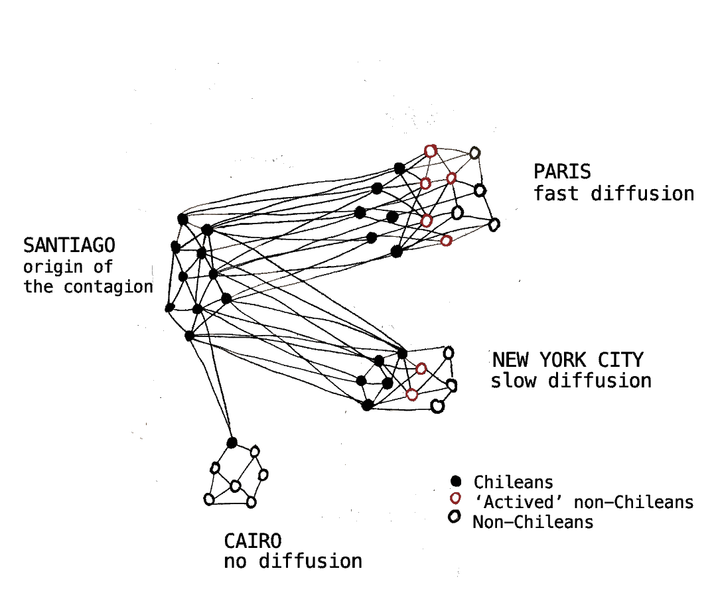
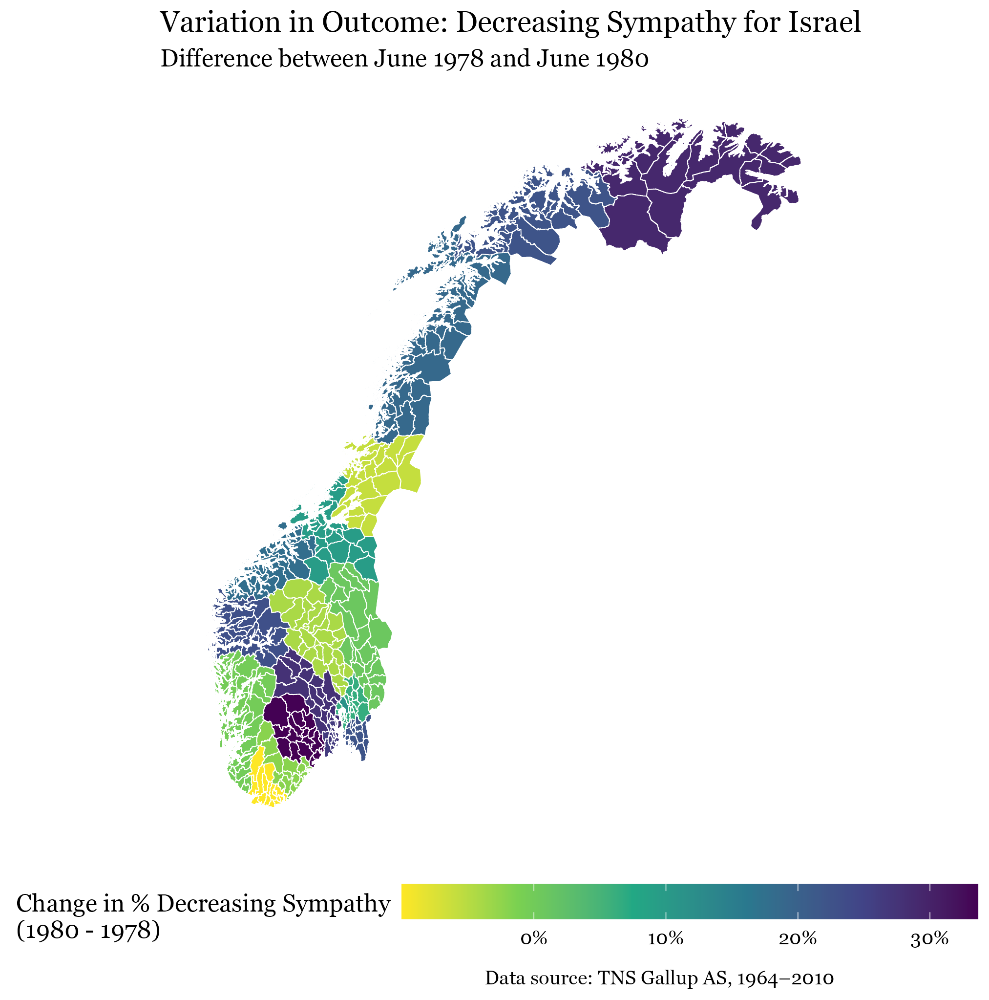

Abstract: How do local expressions of dissent become global? This article studies the diffusion of “Un violador en tu camino”—a protest performance against gender-based violence born out of the 2019 Chilean uprisings—as a case of complex contagion. Combining protest-event and survey data, I show the pivotal role of the Chilean diaspora’s network structure in its diffusion. The anthem initially resonated with diaspora communities, who staged solidarity performances. Direct exposure to these performances, facilitated by shared ties, subsequently inspired non-Chilean locals to adapt it to their contexts. As local adaptations proliferated, cultural differences were overcome, rendering Chilean intermediaries unnecessary for further adoption. Essentially, the formation of the Chilean diaspora in the 1970s created a transnational network that, decades later, catalyzed the diffusion of “Un violador en tu camino” through clusters of individuals with ties to both Chile and their host societies. This reveals a broader phenomenon in which historical emigration patterns inadvertently create latent global infrastructures for diffusion.

Working papers
From Frontlines to Home: Returning Soldiers and the Diffusion of Political Attitudes

Abstract: The stabilizing properties of social networks suggest that large-scale attitudinal change should be rare and gradual. We examine a striking departure from this expectation: a sharp shift in Norwegian opinion toward Israel between 1978 and 1980, after decades of consistent support. We argue that shifts in mass attitudes can emerge from within social networks when trusted in-group members return with first-hand information acquired through short-term mobility. We test this argument using Norwegian UNIFIL peacekeepers stationed in Lebanon from 1978 onwards, who upon returning shared accounts that challenged dominant narratives about Israel’s actions in the region. Combining public opinion data with an original survey of former veterans, we leverage geographic variation in returnee intensity to show that counties with greater exposure to returnees experienced sharper declines in pro-Israel sentiment. The effect operated through interpersonal discussion among peers, and did not depend on ideological alignment between messengers and audiences. The findings suggest that the very network structures that typically sustain attitudinal stability can, when temporarily disrupted by mobility, open windows for change.
Why Chile’s Voice Echoed Louder: The Influence of Refugee Influxes on Transnational Solidarity
Abstract
Why do only some distant political crises elicit widespread transnational solidarity? In this paper, I offer a bottom-up explanation where interpersonal contact with individuals fleeing a crisis activates local solidarity mobilization. Focusing on activism against the 1973–89 Chilean dictatorship, I use a difference-in-differences design with a novel city-level panel dataset covering 23 countries to show that cities receiving Chilean refugees were significantly more likely to host solidarity protests. Complementary qualitative evidence reveals that formal resettlement programs fostered repeated interactions between refugees and local residents, allowing firsthand accounts of repression to circulate. These interactions, in turn, embedded the Chilean cause within local social networks, intensified its moral salience, and spurred collective action among host populations. The findings reveal that refugee inflows can reshape the geography of political concern, prompting host communities to engage with global struggles rather than simply reacting defensively.